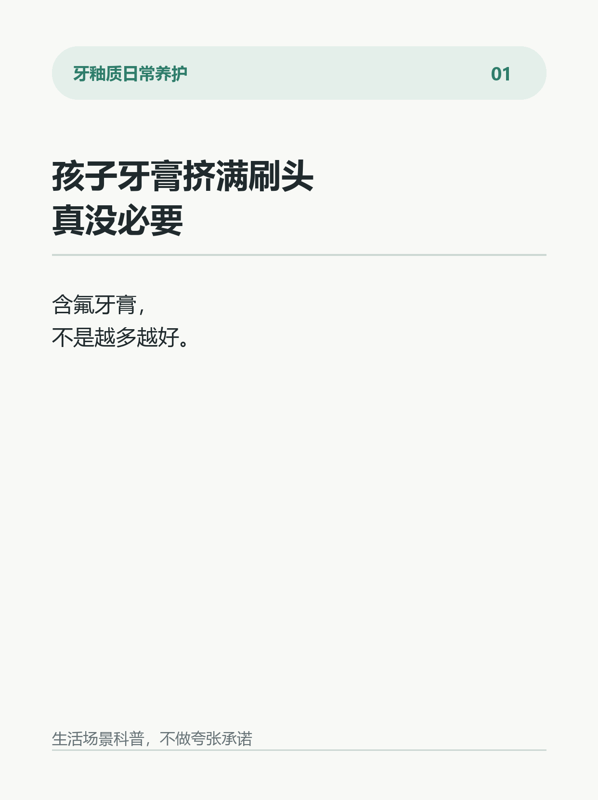
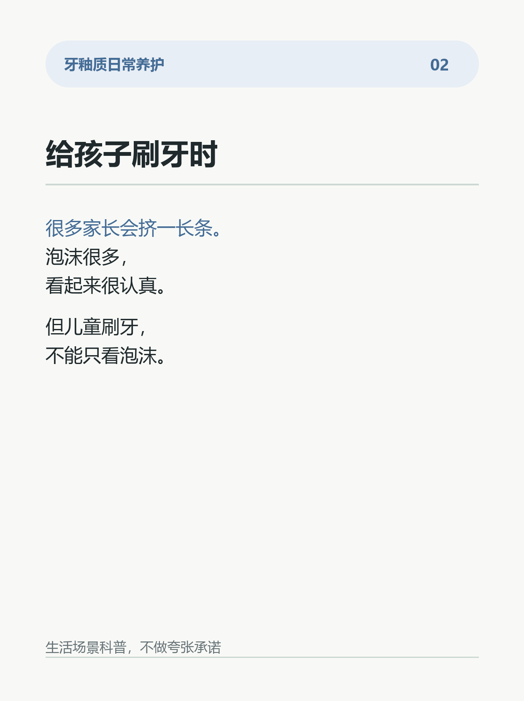
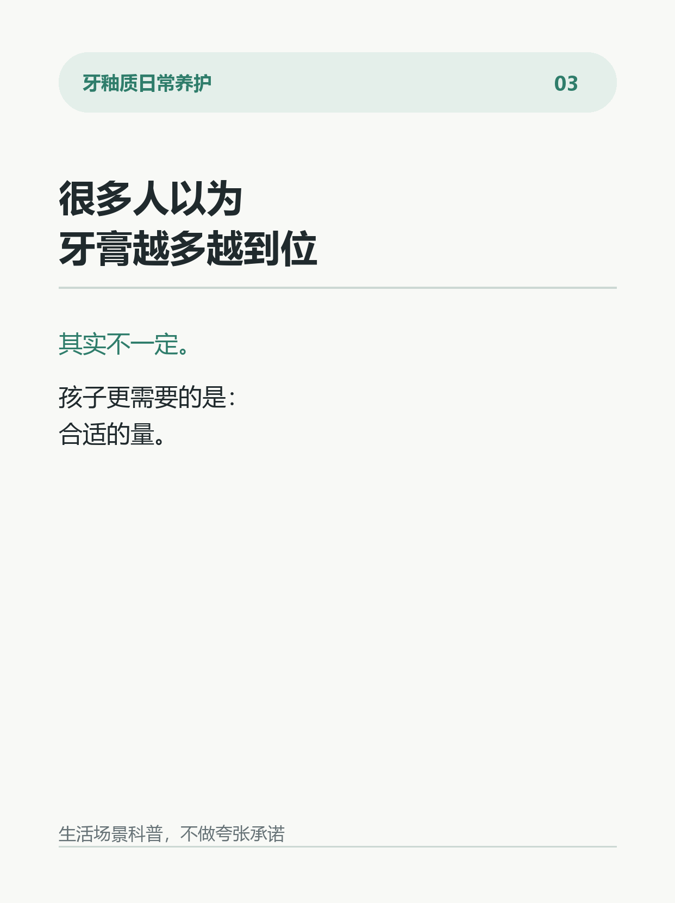
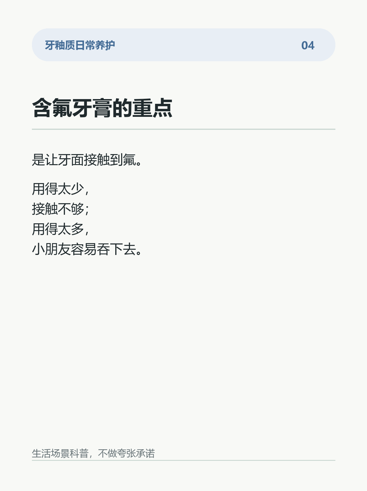
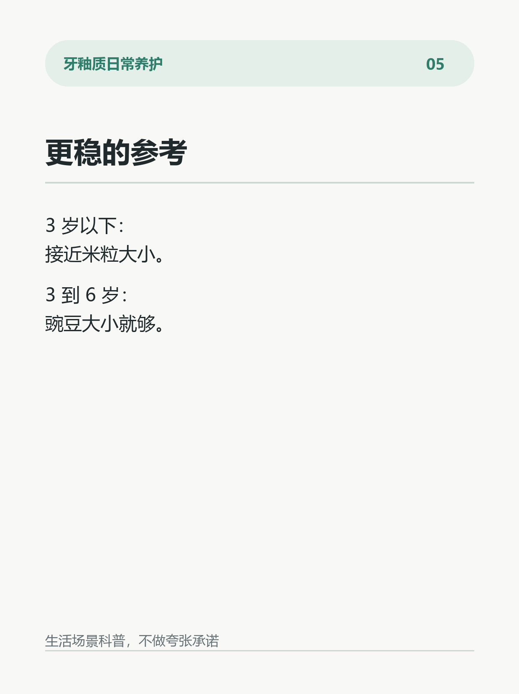
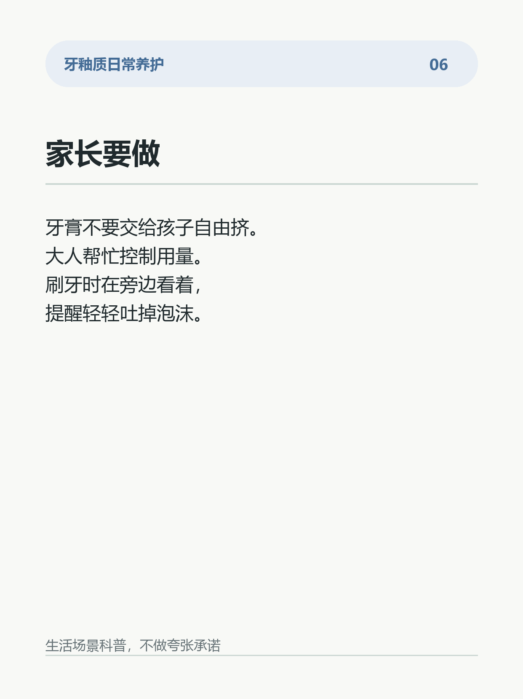
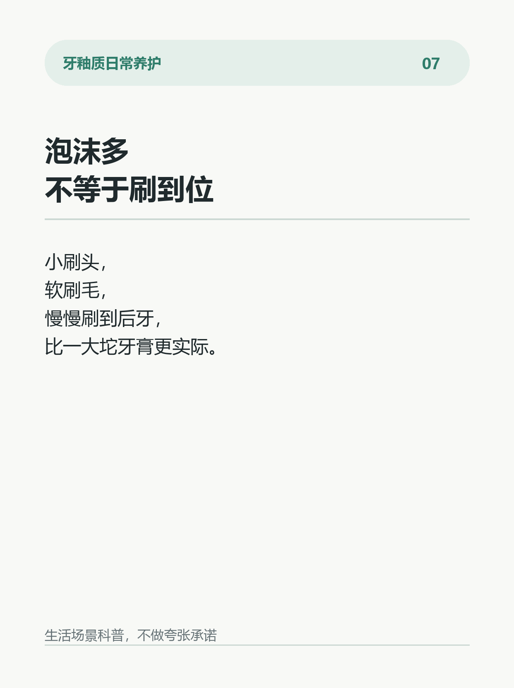
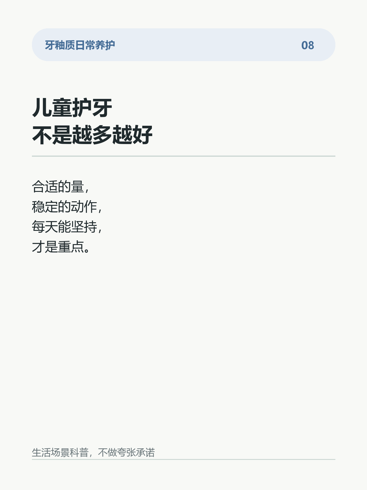

孩子牙膏挤满刷头，真没必要
给孩子刷牙时，很多家长会下意识挤一长条牙膏。
广告里看起来泡沫越多越干净。
孩子也会觉得甜甜的、香香的，很想多挤一点。
但儿童含氟牙膏这件事，不是越多越好。
关键要看两个点：
孩子多大？
能不能稳定把牙膏泡沫吐出来？
牙膏里的氟，重点是给牙面提供日常矿物支持。用得太少，牙面接触不够；用得太多，小朋友又容易吞下去。
所以更稳的方式是按年龄控制用量。
3 岁以下：薄薄一点，接近米粒大小。
3 到 6 岁：豌豆大小就够。
不是挤满刷头才叫认真。
更重要的是：
1. 家长帮忙挤，不把牙膏交给孩子自由挤。
2. 刷牙时有人看着，提醒轻轻吐掉泡沫。
3. 刷毛选软一点，小刷头更容易刷到后牙。
4. 不用追求满嘴泡沫，刷到牙面才是重点。
5. 牙膏放在孩子自己够不到的位置。
很多人以为：
牙膏越多，护牙越到位。
其实孩子刷牙更看重“合适的量 + 稳定执行”。
量太夸张，反而增加吞咽负担。
量合适，刷得认真，才更适合日常养护。
你家孩子刷牙，是自己挤牙膏，还是大人帮忙挤？
#儿童口腔护理 #牙釉质 #含氟牙膏 #刷牙习惯 #护牙日常 #牙面状态 #生活小习惯 #亲子日常








参考来源与边界
# 参考来源
1. American Dental Association / MouthHealthy. Toothpaste.
https://www.mouthhealthy.org/all-topics-a-z/toothpaste
2. Centers for Disease Control and Prevention. Children’s Oral Health.
https://www.cdc.gov/oral-health/prevention/childrens-oral-health.html
3. American Academy of Pediatric Dentistry. Fluoride Therapy.
https://www.aapd.org/research/oral-health-policies--recommendations/fluoride-therapy/
4. Walsh T, Worthington HV, Glenny AM, Marinho VCC, Jeroncic A. Fluoride toothpastes of different concentrations for preventing dental caries. Cochrane Database of Systematic Reviews. 2019.
https://doi.org/10.1002/14651858.CD007868.pub3
5. Wong MCM, Glenny AM, Tsang BWK, Lo ECM, Worthington HV, Marinho VCC. Topical fluoride as a cause of dental fluorosis in children. Cochrane Database of Systematic Reviews. 2010.
https://doi.org/10.1002/14651858.CD007693.pub2
# 证据边界
这些资料可以支持：儿童含氟牙膏应按年龄控制用量；3 岁以下使用很少量，3 到 6 岁使用豌豆大小是常见建议；过量吞咽含氟牙膏可能带来发育期牙面颜色或质地方面的风险。
这些资料不能支持：牙膏挤得越多越好；任何牙膏可以承诺绝对结果；日常刷牙可以替代口腔检查。